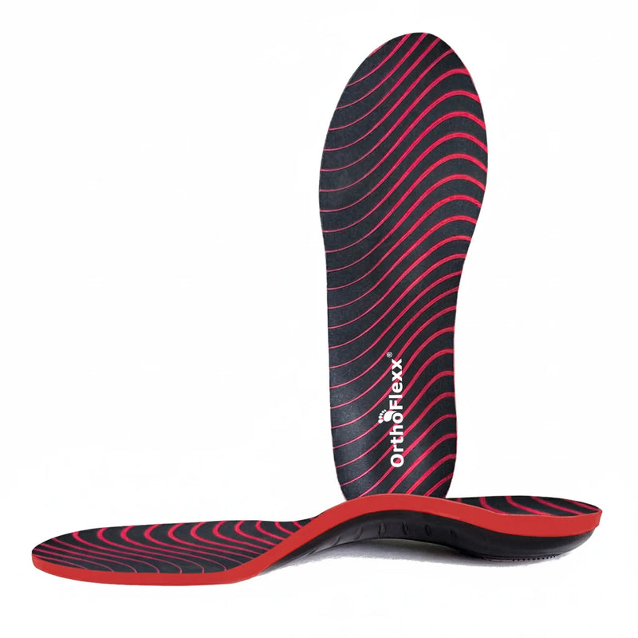

OrthoFlexx MODELAR
Copie o catálogo enxuto (3 itens), o brinde que vira bump percebido (almofada de calcanhar grátis) e a comparação "$1.000 da palmilha sob medida". Evite depender de 1 criativo só: 996 cópias do mesmo anúncio é risco de fadiga.
01Produto campeão

produto que os anúncios do nicho promovem
Max Arch Support Insoles
$64,953 produtos no catálogo · mediana $64,95
palmilha de arco firme, recortável; leva "Achilles Cushions" de brinde. observado
| Principais produtos | Leitura |
|---|---|
| Max Arch Support Insoles | campeão no nicho de dor no pé |
| Catálogo (3 itens, $19,99 a $64,95) | só 3 produtos: 2 palmilhas e almofada de calcanhar |
02Mídia paga
996
anúncios ativos hoje
soma de 1 página(s): OrthoFlexx
observado · conector Meta Ads
1.260
no histórico total
ACTIVE + inativos, mesmas páginas
observado
79%
Sobrevivência
ativos ÷ histórico
calculado
200
anúncios no Google Ads
Google Ads Transparency Center
observado
| Ritmo de criativo | Valor | Leitura |
|---|---|---|
| criativos únicos na amostra de 50 | 1 | títulos distintos nos 50 anúncios ativos mais recentes |
| por dia | ~17 | janela da amostra: 2,9 dias |
| únicos por semana | ~2 | capacidade de produzir criativo novo |
| duplicação | 50x | anúncios ÷ criativos únicos: mesma peça em várias variações |
| longevidade máxima | 370 dias | o criativo campeão é o mais longevo da mineração (não o mais recente) |
| mix de formato | catálogo dinâmico 100% | amostra de 13 anúncios no nicho |
| nível de sofisticação | nível 1 | vídeo de celular, estático com texto ou catálogo: produção barata |
Ranking de criativos vencedores (por longevidade)
03Tráfego real (SimilarWeb · set/2026)
não obtido
visitas/mês (SimilarWeb · set/2026)
total não exibido na página pública; estimado pelo rank (#638.911, entre Footstr #998.775 = ~7 mil e Stepprs #80.484 = ~231 mil)
observado
#638.911
rank global
rank nos EUA #181.156 · variação no mês 11,19%
observado
39,92%
bounce
2,83 páginas por visita · 1min12s
observado
77,94%
do tráfego vem dos EUA
observado
Pago vs orgânicoCanais: Social pago 24,46% (1º), direto (2º), display (3º). Busca: termos de marca ("orthoflex", "orthoflexx").
04Faturamento mensal estimado
$40.310
receita bruta/mês, centro
621 pedidos estimados
calculado
$24.186
piso
calculado
$56.433
teto
calculado
$5.724
mídia/mês (gasto em mídia estimado)
14,2% da receita (IRP); conferência por clique: $7.035
inferido
LimiteMétodo: visitas estimadas (15.000/mês) × conversão 4,14% (setor 3,31% × ajuste 1.25 pelo bounce) × ticket $64,95. Confiança: estimado incerto. Benchmark do setor: CPM $10,42, CPC $0,67, CPA $9,28 (e-commerce/Health). CPM/CPC por anunciante não são públicos.
05Páginas capturadas
06Anatomia do vencedor inferido
| Elemento | Leitura |
|---|---|
| Big idea | Arco firme em todo sapato que você tem, por uma fração dos $1.000 de uma palmilha sob medida. |
| Mecanismo | arco que "aguenta 150 kg sem colapsar" |
| Hook | pergunta direta pra quem pensa em palmilha sob medida ("Read this before you spend over $1,000") |
| Presell | sem advertorial: catálogo dinâmico direto |
| Objeção principal | "e se não servir?": recortável + devolução mesmo recortada |
InferidoMomentum da operação: CRESCENDO. tráfego +11,19% no mês e 996 anúncios ativos, todos variações de UM criativo de catálogo.
07Catálogo, oferta e identificação
- Plataforma
- Shopify
- Apps (tech stack)
- Klaviyo, Triple Whale, Hotjar, Clarity
- Pixel Meta
- não obtidonão exposto no HTML (coletor sem navegador)
- Catálogo
- 3 produtos, $19,99 a $64,95
- Frete
- grátis
- Garantia
- 30 dias, devolução grátis (vale mesmo recortada)
- Prazo e BNPL
- prazo de envio: 3 a 6 dias, "Fast shipping from the US" · BNPL/parcelamento: não detectado; aceita cartão HSA/FSA
- Reviews
- "1.200+" no Trustpilot e nota 4,8 (alegação da home, não verificada)
- Alegação
- "Holds 330 lbs without collapsing". Cruzamento com a idade (checagem de fraude de prova social): operação desde mai/2022 (~4,4 anos). Compatível com 4 anos de operação; a contagem é do Trustpilot, não verificada aqui.
- Redes
- Instagram @orthoflexx_official, ~17 mil seguidores, 448 posts
O que copiar: o catálogo enxuto (3 itens), o brinde que vira bump percebido (almofada de calcanhar grátis) e a comparação "$1.000 da palmilha sob medida".
08Dados não obtidos
| Dado | Motivo | Método tentado |
|---|---|---|
| Gasto e impressões dos anúncios | a Meta não publica gasto de anúncio comercial fora da UE | conector Meta Ads e Biblioteca pública |
| Pixel ID | não aparece no HTML estático | coletar.mjs (grep do HTML), sem navegador |
| Primeira captura no Wayback | o CDX não devolveu registro | Wayback CDX; idade usada = data do 1º produto |
| Visitas exatas | total atrás do cadastro do SimilarWeb; trafego.js bloqueado (CloudFront) | trafego.js (5 tentativas), página pública via WebFetch, rank global |
09Veredito e classificação
DROPSHIP DE MARCA
modelo
inferido
MODELAR
veredito
recomendado
NÍVEL INICIANTE
nível (soma do scorecard)
calculado
CONSTRUÍVEL
defensabilidade
tem tráfego direto/orgânico e anos de operação
inferido
| Eixo do scorecard | Nota | Base |
|---|---|---|
| Sourcing simples | 2/2 | 3 produtos, palmilha recortável (tamanho ajusta na tesoura) |
| Ticket fecha sem escada complexa | 2/2 | $64,95 avulso já banca o CPA |
| Criativo simples de produzir | 2/2 | 1 criativo de catálogo duplicado 996 vezes |
| Mecanismo com urgência | 2/2 | dor no arco e no calcanhar |
| Investimento de entrada baixo | 2/2 | operação de 1 criativo, sem advertorial |
| Sem dependência de autoridade | 2/2 | vende em "não colapsa" e comparação de preço |
| Soma | 12/12 | nível iniciante calculado |
Fontede onde veio
Conector Meta Ads, SimilarWeb set/2026, products.json, PDP.observado
Observaçãoo que foi visto
996 ativos, 1.260 no histórico, campeão a $64,95, ~15.000 visitas/mês.observado
Interpretaçãoo que isso sugere
tráfego +11,19% no mês e 996 anúncios ativos, todos variações de UM criativo de catálogo.inferido
Decisãoo que a régua diz
MODELAR, DROPSHIP DE MARCA, nível iniciante.calculado
Próxima açãoo que fazer agora
Copiar o catálogo enxuto (3 itens), o brinde que vira bump percebido (almofada de calcanhar grátis) e a comparação "$1.000 da palmilha sob medida".recomendado